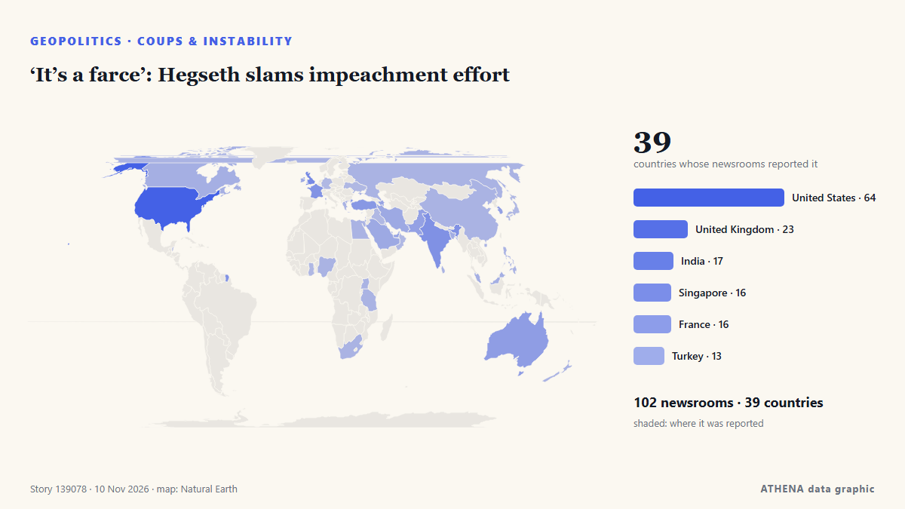

‘It’s a farce’: Hegseth slams impeachment effort

Reported independently by 102 outlets in 39 countries since 4 Nov, first by Breaking Belize News; coverage is still spreading. ATHENA rates the risk critical (8.2/10), driven mainly by the severity of the harm described and the pace of the reporting. Confidence is 91% (high), with 102 independent outlets corroborating it and an average source reliability of 74%. Outlets by country: United States (5), United Kingdom (4), Turkey (4). Coverage: 4 Nov to 5 Nov, 32 hours.
Why it matters: Security and diplomatic developments can shift alliances, trade and markets well beyond the countries directly involved.
What changed: 104 new reports from 65 outlets in the 24 hours to 11 Nov.
First reported as: Pete Hegseth is now a problem Trump can’t bring himself to solve
How to read this page
- What you are reading
- 102 outlets in 39 countries reported this event. The reports below are listed in the order they appeared; each headline opens the original article. ATHENA writes none of the reports.
- Our reading
- For the record — The reports describe a completed, domestic, commercial or personal matter. We list it so you can see who reported it and when. We are not tracking a risk of wider conflict here.
- How much evidence
- Fair Several independent outlets agree, but the picture could still change.
After repeats, off-topic items and stale reports are removed, 20 of the 40 listed reports are counted; 75% of the headlines match the event.
- What this does not mean
- ATHENA measures how an event is reported, not whether it is true. This is not a forecast, a judgement on who is right, or advice.
- What would change it
- Reports from other independent outlets showing a different development, or a firm confirmation or denial from an official source.
Reading R2 · refreshed with every update of this page. ATHENA has not yet published a track record for these readings; when it does, it will be linked here.
At a glance
Selected, scored and written by ATHENA's published methodology. No editor intervenes in individual events. How this is produced ›
| 04 Nov 13:53 UTC | 11 |
|---|---|
| 04 Nov 19:53 UTC | 9 |
| 05 Nov 01:53 UTC | 7 |
| 05 Nov 07:53 UTC | 2 |
| 05 Nov 13:53 UTC | 9 |
| 05 Nov 19:53 UTC | 17 |
| 06 Nov 01:53 UTC | 4 |
| 06 Nov 07:53 UTC | 11 |
| 06 Nov 13:53 UTC | 6 |
| 06 Nov 19:53 UTC | 2 |
| 07 Nov 01:53 UTC | 1 |
| 07 Nov 07:53 UTC | 2 |
| 07 Nov 13:53 UTC | 1 |
| 07 Nov 19:53 UTC | 0 |
| 08 Nov 01:53 UTC | 0 |
| 08 Nov 07:53 UTC | 0 |
| 08 Nov 13:53 UTC | 5 |
| 08 Nov 19:53 UTC | 4 |
| 09 Nov 01:53 UTC | 6 |
| 09 Nov 07:53 UTC | 6 |
| 09 Nov 13:53 UTC | 19 |
| 09 Nov 19:53 UTC | 49 |
| 10 Nov 01:53 UTC | 15 |
| 10 Nov 07:53 UTC | 31 |
| 10 Nov 13:53 UTC | 34 |
| 10 Nov 19:53 UTC | 24 |
| 11 Nov 01:53 UTC | 1 |
| 06 Nov 04:40 UTC | 7.0 |
|---|---|
| 06 Nov 10:19 UTC | 6.9 |
| 09 Nov 11:28 UTC | 7.0 |
| 09 Nov 23:39 UTC | 7.5 |
| 10 Nov 05:16 UTC | 8.2 |
| 10 Nov 05:51 UTC | 7.4 |
| 10 Nov 06:00 UTC | 8.1 |
| 10 Nov 08:12 UTC | 7.3 |
| 10 Nov 10:39 UTC | 7.7 |
| 10 Nov 14:04 UTC | 7.8 |
| 10 Nov 17:16 UTC | 7.5 |
| 10 Nov 21:36 UTC | 8.2 |
| 10 Nov 22:02 UTC | 7.5 |
| 10 Nov 22:44 UTC | 8.0 |
| 10 Nov 23:02 UTC | 7.3 |
| 11 Nov 00:19 UTC | 8.1 |
| 11 Nov 02:07 UTC | 8.2 |
Why these numbers
Importance
Risk
Confidence
The reporting — who reported it, and when
headline as published · opens the original- Breaking Belize News · BelizeMassie: Republicans lost because they “betrayed their promises”
- The Hill · United StatesMassie: Midterm results 'about holding Republicans accountable for betraying their promises'
- The Independent · United KingdomTrump is asking those in his circle about keeping Hegseth after disastrous midterms: report
- investingLive (ForexLive) · INTCrude oil futures tumbled. Down close to 8%
- CleanTechnica · United States“War” Secretary Pete Hegseth Endorses 15 Minute City Model
- Anadolu Agency (English) · TurkeyTrump rules out replacing Hegseth as defense chief
- Arab Times · KuwaitTrump Weighs Replacing Hegseth After Crushing Republican Midterm Defeat
- The Hill · United StatesTrump: Hegseth would be 'very popular' as Tennessee senator
- Business Recorder · PakistanTrump rules out firing Pentagon chief Hegseth
- NDTV · IndiaTrump Rules Out Sacking Pete Hegseth After Losses Midterm Polls
- APA (English) · AzerbaijanTrump says he has no plans to replace Defense Secretary Pete Hegseth - UPDATED
- TASS (English) · RussiaTrump says he has no plans to dismiss Pentagon chief Hegseth
- Defense One · United StatesCancellations, investigations, and even impeachment could be ahead under Democratic Congress
- Greek City Times · GreeceTrump Defends Iran War Despite Republican Election Losses
- Times of India · IndiaIs Pete Hegseth on his way out? Trump weighs Pentagon leadership after GOP setback
- New Straits Times · MalaysiaTrump says Hegseth doing 'a very good job' as questions swirl about his future
- The Straits Times · SingaporeTrump says Hegseth doing ‘a very good job’ as questions swirl about Defence Secretary’s future
- Free Malaysia Today · MalaysiaTrump says Hegseth doing ‘a very good job’ as questions swirl about his future
- The Guardian · United KingdomPete Hegseth may take fall for Republicans’ midterm losses, despite Trump support
- The Korea Times · South KoreaTrump says Hegseth doing 'a very good job' as questions swirl about his future
- CNA (Channel NewsAsia) · SingaporeTrump says Hegseth doing 'a very good job' as questions swirl about his future
- Ada Derana · Sri LankaTrump says Republicans harmed by Iran war, inability to 'transfer the love' for him
- Gulf News · United Arab EmiratesTrump weighs Hegseth’s fate as GOP turns on war chief
- AzerNews · AzerbaijanTrump said to weigh Hegseth's future as war secretary
- Cyprus Mail · CyprusHegseth’s future in doubt despite Trump’s backing
- Dawn · PakistanTrump says Hegseth doing 'a very good job' as questions swirl about defence secretary's future
- IRNA (English) · IranSecurity chief highlights Mazandaran’s role in Iran-Iraq War
- The Independent · United KingdomTrump issues ominous warning as Democrats get another chance to impeach him. Will they take it?
- Anadolu Agency (English) · TurkeyTrump says he gets calls from people unhappy with Defense Secretary Hegseth
- TRT World · TurkeyTrump reveals calls from people critical of Hegseth
- NDTV · IndiaTrump Is Making Calls To Advisers About Hegseth's Future As Pentagon Chief: Report
- The Hill · United StatesMassie to push a forced vote on second Epstein files bill next week
- The Independent · United KingdomPete Hegseth is now a problem Trump can’t bring himself to solve
- TheJournal.ie · IrelandUS Defence Secretary Pete Hegseth under growing pressure after bruising midterm election results
- Gulf News · United Arab EmiratesIran war puts US Defence Secretary Pete Hegseth's Pentagon future in doubt
- Stuff · New ZealandDonald Trump refuses to sack US defence secretary over Iran war
- The Straits Times · SingaporePressure mounts on US defence chief after Republican midterm election rout
- Nile Post · UgandaMassie Moves to Impeach Hegseth Over Iran War, Defence Secretary Hits Back
- Anadolu Agency (English) · TurkeyTrump considering possible replacements for Defense Secretary Pete Hegseth: Report
- NDTV · India"Doing A Good Job": Trump Backs Pete Hegseth As He Faces Iran War Heat